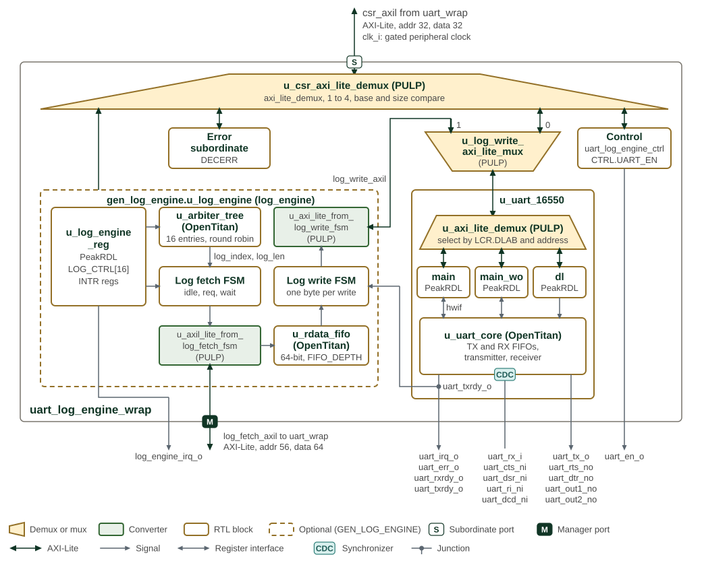

Log Engine
1. Overview
The Log Engine sends memory-resident messages to a UART without a CPU copying each byte. Software supplies one memory region, divided into 16 slots, and submits each message by writing its slot’s length. The engine selects pending slots in round-robin order and completes one message before moving to the next.
A 64-bit AXI4-Lite read path fetches message data into a FIFO. A separate
32-bit AXI4-Lite write path sends one character at a time to a fixed UART
address, paced by uart_tx_ready_i. The register interface is also
32-bit AXI4-Lite. Fetch addresses are 56 bits; UART addresses are 32 bits.
The
Log Engine section
of the Programmer’s Guide gives the configuration, submission and recovery
procedures.

SMC log-engine wrapper and data paths shows the SMC wrapper and its memory-to-UART
data paths. Parentheses after an instance name give its module or, for a
block taken from another project, that project: the demuxes, the mux and
the axi_lite_from_mem converters come from PULP, and u_uart_core,
u_arbiter_tree and u_rdata_fifo from OpenTitan.
uart_log_engine_wrap runs on one clock, clk_i. Its register
port, with 32-bit address and data, comes from uart_wrap, and the demux
u_csr_axi_lite_demux decodes it by base and size onto four maps: the UART,
the log engine, the control block and an error slave that answers DECERR.
The control block u_uart_log_engine_ctrl_reg, generated by PeakRDL from
uart_log_engine_ctrl.rdl, drives uart_en_o from CTRL.UART_EN.
The UART register path and the log engine’s write path share the UART’s
register port through the mux u_log_write_axi_lite_mux: port 0 carries
register accesses and port 1 the log engine’s writes. Inside u_uart_16550,
the demux u_axi_lite_demux selects one of three PeakRDL register blocks.
While LCR.DLAB is set, DLL and DLM go to the divisor-latch block
(dl); writes to THR and FCR go to the write-only block (main_wo);
everything else goes to the main block. u_uart_core holds the TX and RX FIFOs, the transmitter and
the receiver, and passes uart_rx_i and the modem inputs through two-flop
synchronizers, marked by the synchronizer badge on its edge.
The dashed outline marks the log engine, which exists only when
GEN_LOG_ENGINE is set; without it the log-fetch port is driven to zero and
log_engine_irq_o is low. u_log_engine_reg, generated from
log_engine.rdl, holds the 16 LOG_CTRL registers and the interrupt
registers, and drives log_engine_irq_o. u_arbiter_tree picks a log entry
whose LOG_LEN is non-zero and gives its index and length to the log fetch
FSM. The fetch FSM reads 64-bit words through the axi_lite_from_mem
converter u_axil_lite_from_log_fetch_fsm on the log-fetch port, which has 56-bit address and 64-bit data,
into u_rdata_fifo, whose depth is FIFO_DEPTH (4 in the SMC). The log
write FSM takes one byte at a time from the FIFO and writes it, through a
second converter, u_axi_lite_from_log_write_fsm, to LOG_WRITE_ADDR over a 32-bit
AXI4-Lite port. It waits for uart_txrdy_o before each write.
2. Operation
2.1. Memory Slots and Lengths
LOG_REGION_ADDR specifies the start of a shared region. LOG_REGION_SIZE
specifies its total size in bytes. Use an 8-byte-aligned base and a nonzero
size aligned to 128 bytes, up to 512 KiB. The region is divided equally
among 16 slots; it does not provide independently sized buffers.
For supported settings, slot i starts at:
LOG_REGION_ADDR + (LOG_REGION_SIZE / 16) * i
A nonzero LOG_CTRL[i].LOG_LEN makes that slot pending. The length is in
bytes and remains the submitted value until hardware clears it on completion;
it is not a bytes-remaining counter. Keep the buffer and its configuration
unchanged until completion.
For oversized regions, hardware clamps the effective size to 512 KiB. For a size not aligned to 128 bytes, it divides the effective size by 16 and rounds each slot’s transferable capacity down to a multiple of eight. Requested lengths above that capacity are clamped. A zero-capacity slot completes without a transfer. Software should validate size and length instead of relying on truncation.
2.2. Arbitration and Data Transfer
The arbiter selects among nonzero lengths and advances when the selected message completes. Scheduling is per message, not per byte. A stalled UART or bus response holds up that message and all later entries; round-robin selection does not impose a completion-time bound.
The fetch FSM issues single-beat 64-bit reads and waits for each response.
A FIFO_DEPTH-entry FIFO buffers the returned words. The final read still
fetches a full eight-byte word when the message length is not a multiple of
eight, so the whole fetched word must be readable within the slot.
The write FSM sends bytes in increasing address order, least-significant
byte first within each fetched word. It waits for FIFO data and
uart_tx_ready_i, writes the character in data bits [7:0] to
LOG_WRITE_ADDR, then waits for the response. The current implementation
sets all four write strobes; the UART target must accept that access.
Completion clears the selected length and advances arbitration. It means the write responses have returned, not that the UART has finished shifting the final character onto its serial output.
2.3. Errors and Interrupts
INTR_STATUS.LOG_FETCH_ERR (bit 0) and LOG_WRITE_ERR (bit 4) latch bus
response errors whether or not their interrupts are enabled.
INTR_ENABLE masks the corresponding contributions to irq_o.
Write 1 to a status bit to clear it; INTR_TEST can force either condition.
The FSMs advance on error responses as well as successful responses. There is no automatic retry or per-slot success flag, and a cleared length alone does not prove successful delivery. Software must inspect error status and choose recovery appropriate to its logging requirements.
2.4. Reset and Disable
All logic uses clk_i. Active-low rst_ni asynchronously resets the
registers, state machines, counters and FIFO. Reset release timing is the
integrator’s responsibility; the module does not synchronize it internally.
Clearing CTRL.EN returns the fetch/write FSMs and counters to idle and
clears the FIFO. It does not clear configuration or pending lengths, and
it does not reset the AXI adapters. Disabling an active transfer is not a
guaranteed drain or clean cancellation. Configure while idle; following an
aborted transfer, reconcile outstanding bus traffic before reusing buffers
or restarting the engine.
3. Interface
The parameters and ports of log_engine are listed in log_engine.
| Setting | Value | Source |
|---|---|---|
|
4 by default |
Module parameter: buffered 64-bit words. |
|
16 |
Package constant and generated register inventory. |
Maximum region |
512 KiB |
Package constant |
Fetch address/data |
56/64 bits |
Package types. |
Write address/data |
32/32 bits |
Package types. |
CSR data |
32 bits |
Register interface; address width comes from the generated map. |
A shared clk_i and active-low asynchronous rst_ni drive all interfaces and
internal logic. The CSR AXI4-Lite slave (csr_axil_req_i / csr_axil_resp_o)
carries register traffic; two AXI4-Lite initiators carry memory reads
(log_fetch_axil_req_o / log_fetch_axil_resp_i) and UART writes
(log_write_axil_req_o / log_write_axil_resp_i). Both initiator adapters use
PROT = 3’b010 (non-secure, unprivileged data) and allow one outstanding
request each. They issue no bursts.
uart_tx_ready_i permits the write FSM to request the next character transfer.
The UART integration supplies readiness in the engine’s clock domain and
must account for writes already accepted by the bus. See Arbitration and Data Transfer
for the write data and strobe behavior.
irq_o is the active-high OR of enabled, latched fetch and write error status.
4. Memory Map and Register Reference
4.1. Memory Map
Offsets below are relative to the Log Engine register bank. All registers reset to zero. The generated map gives field access and side effects.
| Register | Offset | Purpose |
|---|---|---|
|
|
Engine enable. |
|
|
Total region size in bytes. |
|
|
Low/high halves of the 56-bit fetch base. |
|
|
UART write address. |
|
|
Latched fetch/write errors; write 1 to clear. |
|
|
Error interrupt enables. |
|
|
Force error status for interrupt testing. |
|
|
Submitted byte length for slot 0–15; cleared on completion. |
4.2. Detailed Register Map
Log Engine Address Map
Configuration and status registers for the UART log engine, including the log region and write pointers.
Register Arrays:
- LOG_CTRL[16]: 16 registers, base 0x40, stride 0x4
Register List:
| Address | Name | Access | Description |
|---|---|---|---|
| 0x0 | CTRL | RW | Control Register |
| 0x4 | LOG_REGION_SIZE | RW | Log Region Size Register |
| 0x8 | LOG_REGION_ADDR | RW | Log Region Address Register |
| 0x10 | LOG_WRITE_ADDR | RW | Log Write Address Register |
| 0x14 | INTR_STATUS | RW | Interrupt Status Register |
| 0x18 | INTR_ENABLE | RW | Interrupt Enable Register |
| 0x1C | INTR_TEST | W | Interrupt Test Register |
| 0x40 - 0x7C | LOG_CTRL[16] | RW | Log Control Register |
Register Details:
CTRL
| Bits | Field | Access | Reset | Description |
|---|---|---|---|---|
| 31:1 | Reserved | - | - | Reserved |
| 0 | EN | RW | 0x0 | Log Engine Enable. When set, enables the Log Engine. When cleared, the engine stops fetching and writing, discards buffered log data and resets transfer progress. Configuration and pending LOG_LEN values are retained, so a pending entry restarts from the start of its slot when the engine is enabled again. Clearing does not wait for outstanding bus responses. |
LOG_REGION_SIZE
| Bits | Field | Access | Reset | Description |
|---|---|---|---|---|
| 31:20 | Reserved | - | - | Reserved |
| 19:0 | LOG_REGION_SIZE | RW | 0x0 | Log region size in bytes. Supported values are at most 512 KiB and aligned to 128 bytes (16 slots times the 8-byte fetch beat). If software programs a larger value, RTL clamps the effective region to 512 KiB. For a value that is not 128-byte aligned, RTL divides the effective region among the 16 slots and rounds each slot's transferable capacity down to complete 8-byte fetch beats. A requested LOG_LEN above that capacity is clamped to the capacity. |
LOG_REGION_ADDR
| Bits | Field | Access | Reset | Description |
|---|---|---|---|---|
| 63:56 | RESERVED | R | 0x0 | Reserved. Reads as zero; writes are ignored. |
| 55:32 | LOG_REGION_ADDR_HI | RW | 0x0 | Log Region Start Address High. Contains fabric address bits [55:32]. |
| 31:0 | LOG_REGION_ADDR_LO | RW | 0x0 | Log Region Start Address Low. |
LOG_WRITE_ADDR
| Bits | Field | Access | Reset | Description |
|---|---|---|---|---|
| 31:0 | LOG_WRITE_ADDR | RW | 0x0 | Log Write Address. This is the address where the log data is written to. |
INTR_STATUS
| Bits | Field | Access | Reset | Description |
|---|---|---|---|---|
| 31:5 | Reserved | - | - | Reserved |
| 4 | LOG_WRITE_ERR | RW1C | 0x0 | Log Write Error Interrupt. Asserted when the bus for writing log data returns an error. |
| 3:1 | Reserved | - | - | Reserved |
| 0 | LOG_FETCH_ERR | RW1C | 0x0 | Log Fetch Error Interrupt. Asserted when the bus for fetching log data returns an error. |
INTR_ENABLE
| Bits | Field | Access | Reset | Description |
|---|---|---|---|---|
| 31:5 | Reserved | - | - | Reserved |
| 4 | LOG_WRITE_ERR | RW | 0x0 | Log Write Error Interrupt Enable. |
| 3:1 | Reserved | - | - | Reserved |
| 0 | LOG_FETCH_ERR | RW | 0x0 | Log Fetch Error Interrupt Enable. |
INTR_TEST
| Bits | Field | Access | Reset | Description |
|---|---|---|---|---|
| 31:5 | Reserved | - | - | Reserved |
| 4 | LOG_WRITE_ERR | W 1P | 0x0 | Log Write Error Interrupt Test. Writing `1` forces the interrupt. |
| 3:1 | Reserved | - | - | Reserved |
| 0 | LOG_FETCH_ERR | W 1P | 0x0 | Log Fetch Error Interrupt Test. Writing `1` forces the interrupt. |
LOG_CTRL[16]
| Bits | Field | Access | Reset | Description |
|---|---|---|---|---|
| 31:16 | Reserved | - | - | Reserved |
| 15:0 | LOG_LEN | RW | 0x0 | Log Length. Writing a nonzero value representing the log length in bytes to this field starts the log transfer process. The field holds the requested length until the transfer completes, when hardware clears it to zero; it is not a remaining-byte counter. There are 16 copies of this register, each representing a log entry. The log entries go through round robin arbitration. |